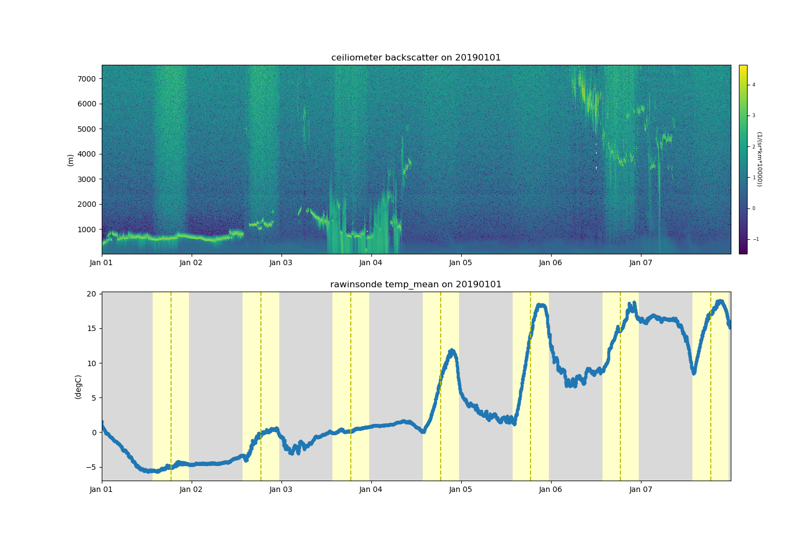

Note
Click here to download the full example code
Example on how to plot multiple datasets at a time¶
This is an example of how to download and plot multiple datasets at a time.
import act
import matplotlib.pyplot as plt
# Place your username and token here
username = ''
token = ''
act.discovery.download_data(username, token, 'sgpceilC1.b1',
'2019-01-01', '2019-01-07')
ceil_ds = act.io.armfiles.read_netcdf('sgpceilC1.b1/sgpceilC1.b1.201901*.nc')
sonde_ds = act.io.armfiles.read_netcdf(
act.tests.sample_files.EXAMPLE_MET_WILDCARD)
print(sonde_ds.act.datastream)
ceil_ds = act.corrections.ceil.correct_ceil(ceil_ds, -9999.)
# You can use tuples if the datasets in the tuple contain a
# datastream attribute. This is required in all ARM datasets.
display = act.plotting.TimeSeriesDisplay(
(ceil_ds, sonde_ds), subplot_shape=(2, ), figsize=(15, 10))
display.plot('backscatter', 'sgpceilC1.b1', subplot_index=(0, ))
display.plot('temp_mean', 'sgpmetE13.b1', subplot_index=(1, ))
display.day_night_background('sgpmetE13.b1', subplot_index=(1, ))
plt.show()
# You can also use a dictionary so that you can customize
# your datastream names to something that may be more useful.
display = act.plotting.TimeSeriesDisplay(
{'ceiliometer': ceil_ds, 'rawinsonde': sonde_ds},
subplot_shape=(2, ), figsize=(15, 10))
display.plot('backscatter', 'ceiliometer', subplot_index=(0, ))
display.plot('temp_mean', 'rawinsonde', subplot_index=(1, ))
display.day_night_background('rawinsonde', subplot_index=(1, ))
plt.show()
Total running time of the script: ( 0 minutes 0.000 seconds)